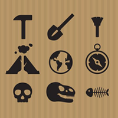
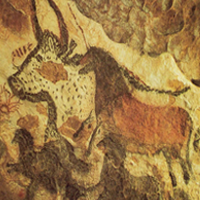
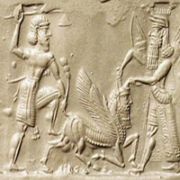

O arqueólogo estuda as sociedades e culturas humanas por meio de objetos fabricados e utilizados no passado. Com conhecimento de história, ele investiga e escava sítios arqueológicos
e observar marcas deixadas num território com o objetivo de entender como ele foi ocupado. Com isso, traça hipóteses e teorias sobre a evolução das sociedades. Pode trabalhar em centros de pesquisa, universidades, e também como consultor na elaboração de relatórios de sítios arqueológicos e licenças ambientais, antes da construção de grandes empreendimentos, como hidrelétricas, rodovias ou indústrias.

Investigação arqueológica
A investigação arqueológica dedicou-se fundamentalmente à pré-história e às civilizações da antiguidade; no entanto, ao longo do último século, a metodologia arqueológica aplicou-se a etapas mais recentes, como a Idade Média ou o período Moderno. Na atualidade, os arqueólogos dedicam-se cada vez mais a fases tardias da evolução humana,e a disciplinas transversais como a arqueologia industrial e a arqueologia sub-aquática.
Tipos de arqueologia:
Arqueologia Pré-Histórica
Arqueologia Pré-Histórica é o estudo da vida humana antes do desenvolvimento da escrita. Arqueólogos chamado pré-história examinar temas como as origens do homem, idade da pedra to-use, o desenvolvimento da agricultura e do crescimento das cidades. Desde os tempos pré-históricos não têm a documentação com a qual comparar os seus resultados, eles devem basear suas conclusões e compreensão das escavações, pesquisas e recuperação de dados.

Arqueologia Clássica
Arqueólogos clássicos geralmente se concentram em analisar os restos das antigas civilizações do Mediterrâneo, especialmente a Grécia clássica e Roma. No entanto, os arqueólogos clássicos também pode examinar as sociedades mediterrânicas pré-históricos, como os micênicos e minóicos. Alguns arqueólogos clássicos examinar as culturas do Oriente Próximo, como o Egito, a Síria, Mesopotâmia e até mesmo culturas bíblicas e alguns também podem explorar o desenvolvimento do mundo Mediterrâneo na Idade Média e da Idade Moderna. Arqueologia Clássica está intimamente ligado ao estudo da arte grega e latina e clássica.

A Evolução Humana explicada de forma simples
A Evolução Humana explicada de forma simples Ao longo dos últimos 100 anos o nosso conhecimento sobre nossos ancestrais aumentou significantemente, e estamos cada vez mais próximos de entender a árvore genealógica hominínea. E se falamos em árvore genealógica, isso significa que a evolução humana, assim como de qualquer outro ser vivo, não é linear! A animação abaixo apresenta um esquema bem simples para entender como a evolução funciona:
A evolução gerou diferentes espécies hominíneas, todas tendo um ancestral em comum. O termo “hominíneo”, aliás, é o termo técnico mais atual utilizado pelos paleoantropólogos e arqueólogos para se referir às espécies listadas abaixo, sendo elas parte da árvore genealógica dos humanos modernos. Todas estas espécies são frutos de uma outra espécie: o nosso ancestral comum entre os humanos modernos e os chimpanzés. Ainda não sabemos quem é este ancestral em comum, pois ele nunca foi encontrado. Então quem é o nosso ancestral hominíneo mais antigo? Ainda não sabemos, mas podemos estar perto de resolver isso.